Позвонить: (4842) 75-75-05
Написать сообщение: m-40@inbox.ru
аймак Завхан → сомон Сантмаргац - доставка продукции
ЗАО "НПО "Механик" поставляет продукцию собственного производства в сомон Сантмаргац на постоянной основе. Всегда в наличии имеется широкий ассортимент товаров,
таких как:
Муфты
Муфты зубчатые по ГОСТ 5006-55
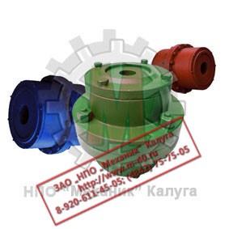
МЗ-1
МЗ-2
МЗ-3
МЗ-4
МЗ-5
МЗ-6
МЗ-7
МЗ-8
МЗ-9
МЗ-10
МЗ-11
МЗ-12
МЗ-13
МЗ-14
МЗ-15
МЗП-1
МЗП-2
МЗП-3
МЗП-4
МЗП-5
МЗП-6
МЗП-7
МЗП-8
МЗП-9
МЗП-10
МЗП-11
МЗП-12
МЗП-13
МЗП-14
МЗП-15
Муфты МУВП по ГОСТ 21424-93
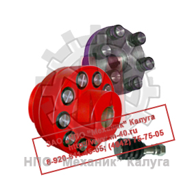
МУВП-1
МУВП-2
МУВП-3
МУВП-4
МУВП-5
МУВП-6
МУВП-7
МУВП-8
МУВП-9
МУВП-10
МУВП-11
МУВП-12
МУВП-13
Колеса крановые
Крюковые подвески
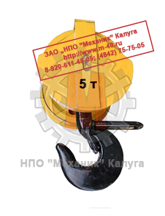
ПК-3,2-12А-1-400-14
ПК-3,2-12А-1-500-14
ПК-5,0-14А-1-400-14
ПК-5,0-14А-1-500-16,5
ПК-5,0-14А-2-400-14
ПК-5,0-14А-2-500-16,5
ПК-10,0-17А-2-500-16,5
ПК-10,0-17А-2-630-18
ПК-10,0-17А-3-400-14
ПК-10,0-17А-3-500-16,5
ПК-12,5-17А-3-400-16,5
ПК-12,5-18А-3-500-16,5
ПК-12,5-18А-3-630-18
ПК-16-18А-3-400-16,5
ПК-16-18А-3-500-16,5
ПК-16-18А-3-630-18
ПК-16-19А-4-400-16,5
ПК-16-19А-4-500-16,5
ПК-16-19А-4-630-18
ПК-20-19А-4-400-16,5
ПК-20-19А-4-500-16,5
ПК-20-20А-4-630-18
ПК-32-20А-4-700-22
ПК-32-22А-4-800-22
ПК-50-24А-5-800-28
ПК-50-24А-5-900-28
Запасные части для башенных кранов
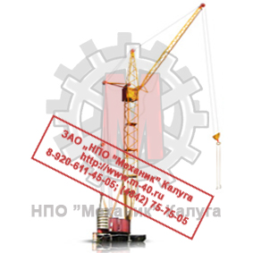
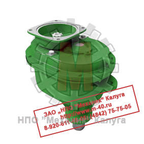
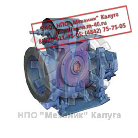
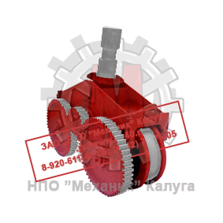
Редуктор поворота У3515
Привод крана ПК-6,3
Ходовая тележка У2260
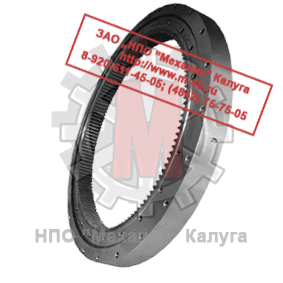
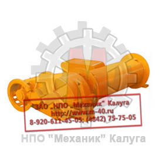
ОПУ-7
Лебедка грузовая У5120
Грузовые барабаны
Детали по чертежам заказчика
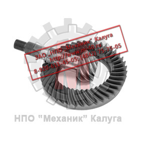
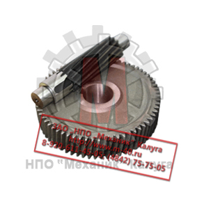
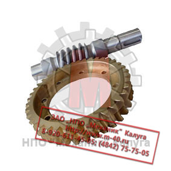
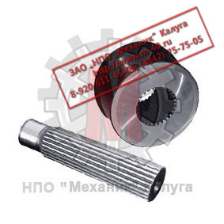
Конические шестерни
Цилиндрические шестерни
Червячные передачи
Шлицевые детали
Запасные части для портальных кранов
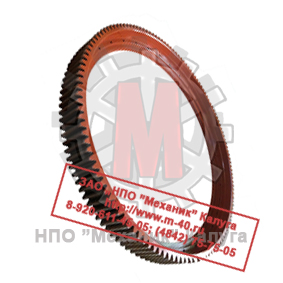
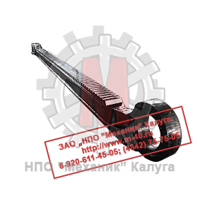
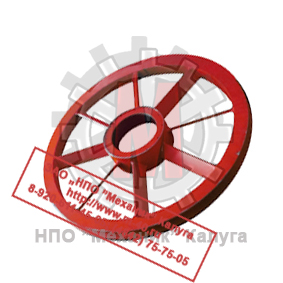
Венец зубчатый
Рейка зубчатая
Блок канатный
Ходовое колесо
Шкивы тормозные
Блоки канатные по ОСТ 24.191.05
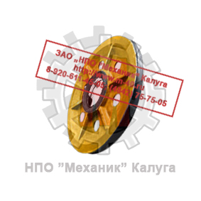
∅140 мм
∅156 мм
∅160 мм
∅165 мм
∅170 мм
∅180 мм
∅195 мм
∅200 мм
∅210 мм
∅240 мм
∅260 мм
∅265 мм
∅290 мм
∅300 мм
∅310 мм
∅315 мм
∅320 мм
∅350 мм
∅355 мм
∅360 мм
∅375 мм
∅380 мм
∅400 мм
∅410 мм
∅420 мм
∅430 мм
∅450 мм
∅530 мм
∅545 мм
∅560 мм
∅630 мм
∅685 мм
∅720 мм
∅750 мм
∅800 мм
∅900 мм
∅960 мм
∅1010 мм
∅1070 мм
Редукторы цилиндрические
Редукторы цилиндрические одноступенчатые
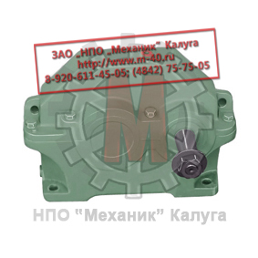
1ЦУ 100
1ЦУ 160
1ЦУ 200
1ЦУ 250
Редукторы цилиндрические двухступенчатые
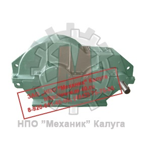
1Ц2У 100
1Ц2У 125
1Ц2У 160
1Ц2У 200
1Ц2У 250
Ц2У 315Н
Ц2У 315К
1Ц2У 355Н
Ц2У 400Н
Ц2У 400К
1Ц2Н 450
1Ц2Н 500
1Ц2Н 560К
Ц2Н 630
Ц2Н 710
ЦДН 630
ЦДН 710
Ц2 250
Ц2 300
Ц2 350
Ц2 400
Ц2 400П
Ц2 500
Ц2 650
Ц2 750
Ц2 1000
РЦД 250
РЦД 350
РЦД 400
РМ 250
РМ 350
РМ 400
РМ 500
РМ 650
РМ 750
РМ 850
РМ 1000
РМ 1000
РК 450
РК 500
РК 600
Р 400
Р 500
ГПШ 400
ГПШ 500
ЦДНД 200
ЦДНД 315
ЦДНД 400
Редукторы цилиндрические трехступенчатые
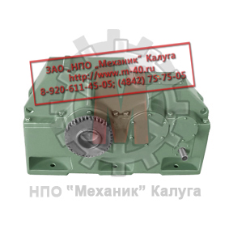
ЦТНД 315
ЦТНД 400
ЦТНД 500
ЦТНД 630
1Ц3У 160
1Ц3У 200
1Ц3У 250
Ц3У 315Н
Ц3У 355Н
Ц3У 400Н
1Ц3Н 450
1Ц3Н 500
Ц3Н 630
Ц3Н 710
Редукторы цилиндрические вертикальные крановые
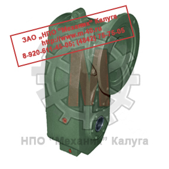
Ц3ВК 100
Ц3ВКФ 100
Ц3ВК 125
Ц3ВКФ 125
Ц3ВК 160
Ц3ВКФ 160
Ц3ВК 200
Ц3ВКФ 200
Ц3ВК 250
Ц3ВКФ 250
В 100
В 100Ф
В 125
В 125Ф
В 160
В 160Ф
В 200
В 200Ф
В 250
В 250Ф
В 400
А 400
ВК 350
ВК 475
ВК 550
ВКУ 500
ВКУ 610
ВКУ 750
ВКУ 765
ВКУ 965
Редукторы коническо-цилиндрические
Редукторы коническо-цилиндрические одноступенчатые
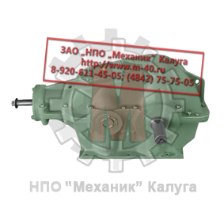
КЦ1 200
КЦ1 250
КЦ1 300
КЦ1 400
КЦ1 500
Редукторы коническо-цилиндрические двухступенчатые

КЦ2 500
КЦ2 750
КЦ2 1000
КЦ2 1300
Редукторы червячные
Редукторы червячные одноступенчатые
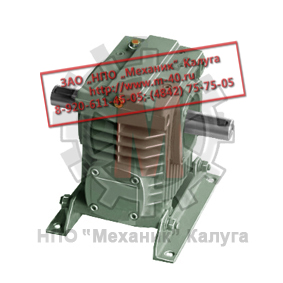
Ч 40
2Ч 40
1Ч 63
2Ч 63
Ч 80
2Ч 80
5Ч 80
Ч 100
5Ч 100
Ч 125
5Ч 125
Ч 160
1Ч 160
Редукторы червячные двухступенчатые
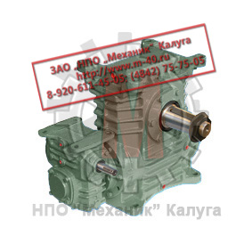
1Ч2 63/40
5Ч2 80/40
5Ч2 100/63
5Ч2 125/63
5Ч2 125/80
1Ч2 160/80
1Ч2 160/100
Муфты
| Муфты зубчатые по ГОСТ 5006-55 | ||||||||||||||||
 |
| |||||||||||||||
| ||||||||||||||||
| Муфты МУВП по ГОСТ 21424-93 | ||||||||||||||||
 |
|
|||||||||||||||
Колеса крановые
Крюковые подвески
 |
|
Запасные части для башенных кранов
 |
|
Грузовые барабаны
Детали по чертежам заказчика
|
Запасные части для портальных кранов
|
Шкивы тормозные
Блоки канатные по ОСТ 24.191.05
 |
|
Редукторы цилиндрические
| Редукторы цилиндрические одноступенчатые | |||||||||||||||||||||||||||||||||||||||||||||||||
 |
|
||||||||||||||||||||||||||||||||||||||||||||||||
| Редукторы цилиндрические двухступенчатые | |||||||||||||||||||||||||||||||||||||||||||||||||
 |
|
||||||||||||||||||||||||||||||||||||||||||||||||
| Редукторы цилиндрические трехступенчатые | |||||||||||||||||||||||||||||||||||||||||||||||||
 |
|
||||||||||||||||||||||||||||||||||||||||||||||||
| Редукторы цилиндрические вертикальные крановые | |||||||||||||||||||||||||||||||||||||||||||||||||
 |
|
||||||||||||||||||||||||||||||||||||||||||||||||
Редукторы коническо-цилиндрические
| Редукторы коническо-цилиндрические одноступенчатые | ||||||
 |
|
|||||
| Редукторы коническо-цилиндрические двухступенчатые | ||||||
|
|
|||||
Редукторы червячные
| Редукторы червячные одноступенчатые | ||||||||||||||
 |
|
|||||||||||||
| Редукторы червячные двухступенчатые | ||||||||||||||
 |
|
|||||||||||||
Узнать цену интересующей Вас продукции Вы можете по телефону:
(4842) 75-75-05
| Апрель 2026 | ||||||
| Пн | Вт | Ср | Чт | Пт | Сб | Вс |
| 1 | 2 | 3 | 4 | 5 | ||
| 6 | 7 | 8 | 9 | 10 | 11 | 12 |
| 13 | 14 | 15 | 16 | 17 | 18 | 19 |
| 20 | 21 | 22 | 23 | 24 | 25 | 26 |
| 27 | 28 | 29 | 30 | |||
| Муфты зубчатые в наличии ГОСТ 5006-55 | ||
| Муфты МЗ | ||
| Тип | Цена, руб., с НДС |
Кол-во, шт. |
| МЗ-1 | 9 900 | 203 |
| МЗ-2 | 15 300 | 165 |
| МЗ-3 | 17 300 | 98 |
| МЗ-4 | 26 200 | 29 |
| МЗ-5 | 33 600 | 1 |
| МЗ-6 | 56 700 | 22 |
| МЗ-7 | 78 800 | 20 |
| МЗ-8 | 107 400 | 10 |
| МЗ-9 | 136 500 | 10 |
| МЗ-10 | 180 000 | 6 |
| Муфты зубчатые ГОСТ Р 50895-96 |
||
| Муфты МЗ | ||
| Тип | Цена, руб., с НДС | |
| МЗ-1 | 12 600 | |
| МЗ-2 | 17 300 | |
| МЗ-3 | 21 300 | |
| МЗ-4 | 29 200 | |
| МЗ-5 | 41 600 | |
| МЗ-6 | 62 700 | |
| МЗ-7 | 90 800 | |
| МЗ-8 | 119 400 | |
| МЗ-9 | 152 500 | |
| МЗ-10 | 210 000 | |
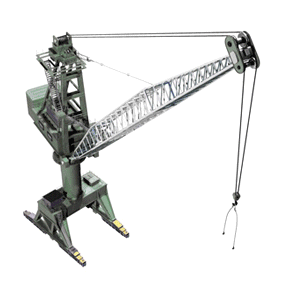
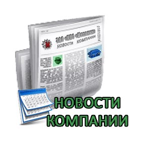